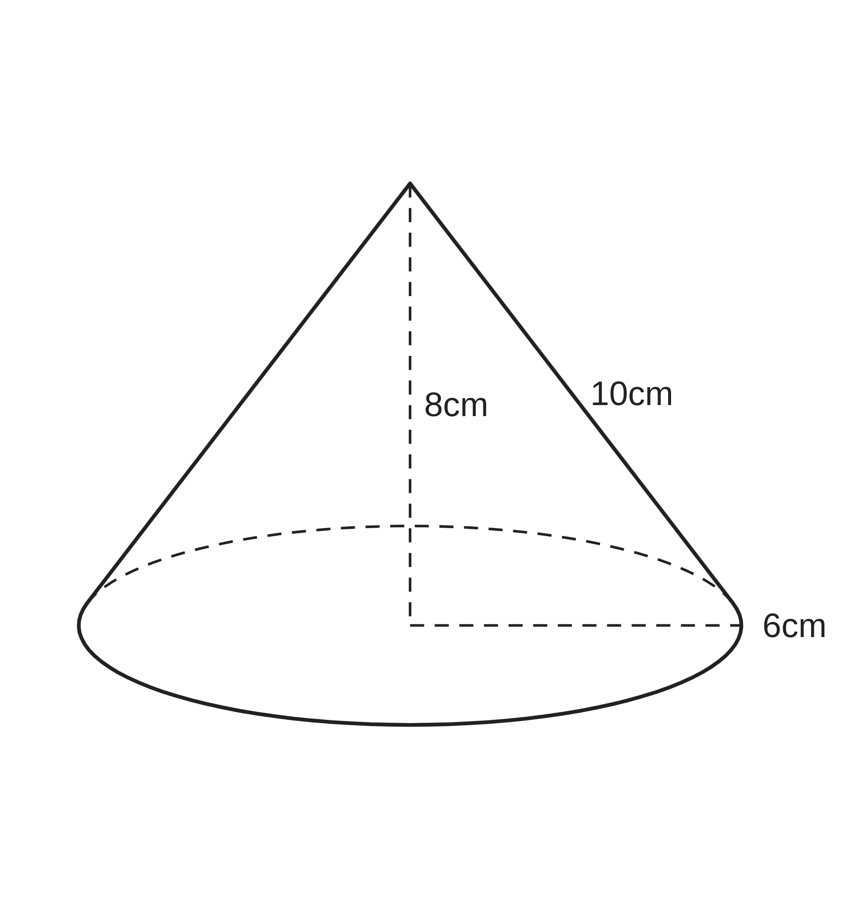
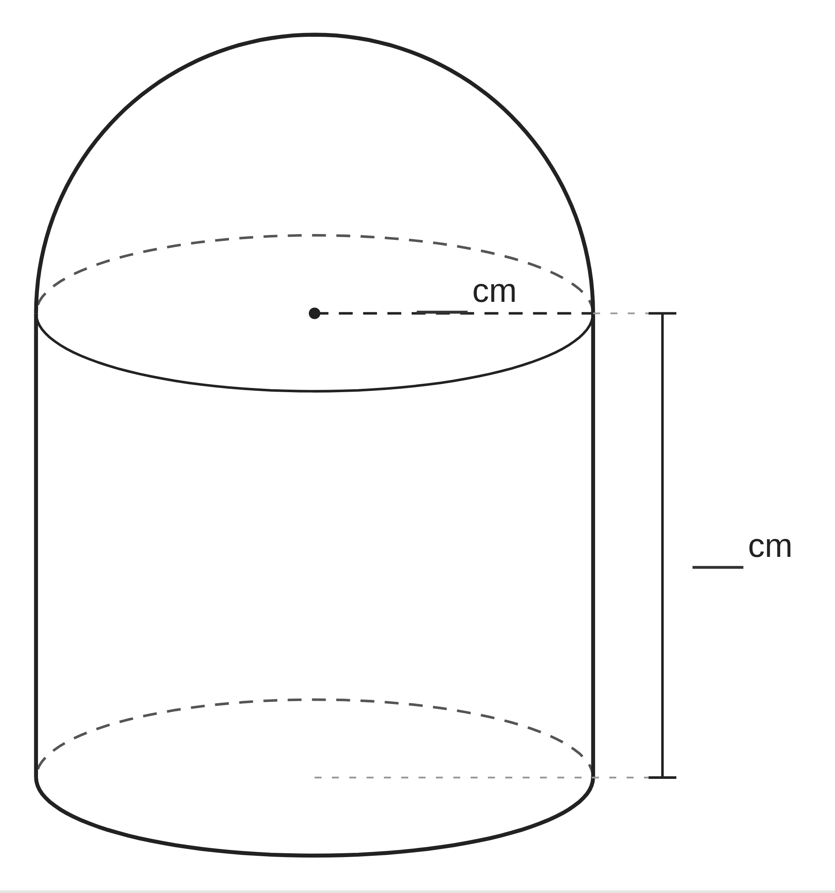
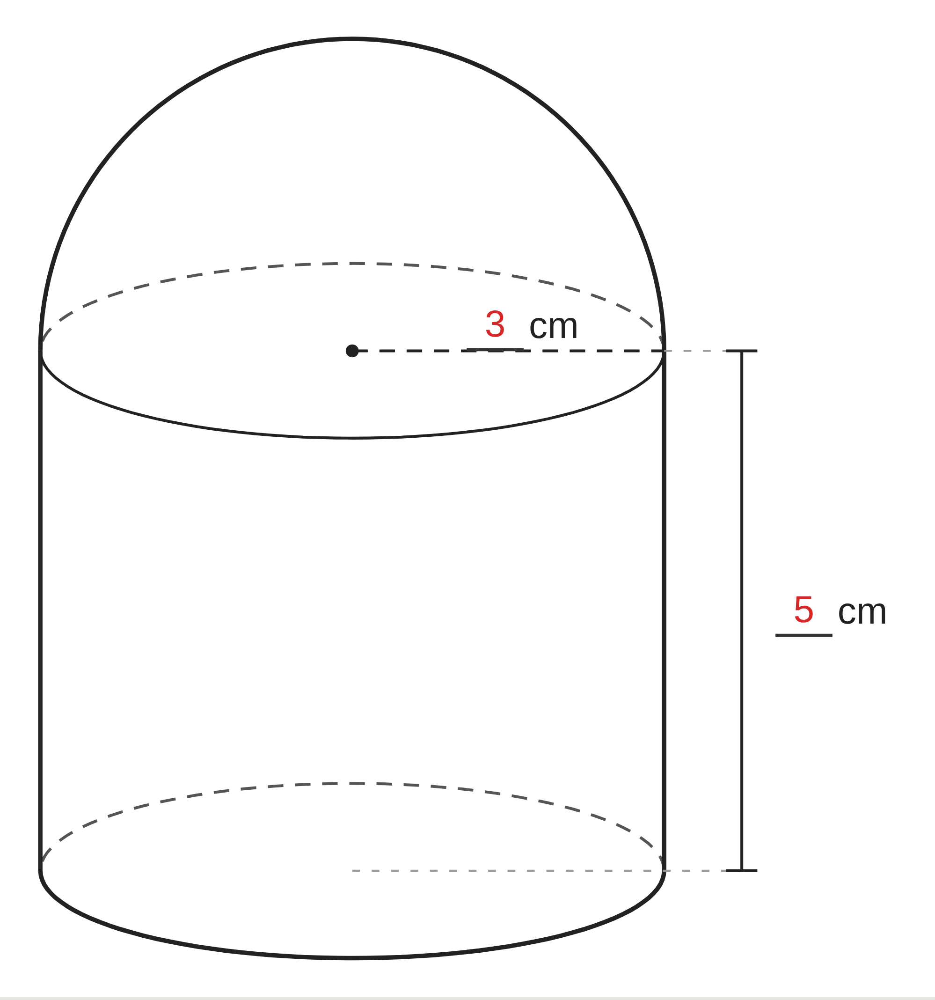

ペア学習
第13時 表面積と体積を、たしかに求められるようになろう
第12時「球の表面積と体積を求めよう」の言葉。
1人1問ずつ出題して、言葉の意味を、自分の言葉で言う。
球
半径
表面積
体積
半球
側面積
空間図形 第13時 表面積と体積を、たしかに求められるようになろう
めあて
第13時 表面積と体積を、たしかに求められるようになろう
学習課題
底面の半径が 6cm、高さが 8cm、
母線の長さが 10cm の円錐の、
表面積と体積を求めよう。
どの長さを、どの式に使うだろう。

空間図形 第13時 表面積と体積を、たしかに求められるようになろう
学習課題のまとめ
第13時 表面積と体積を、たしかに求められるようになろう
円錐（半径 6cm・高さ 8cm・母線 10cm）の、表面積と体積を求めよう。
表面積
側面積 π×10²×12π⁄20π＝60π
底面積 π×6²＝36π
60π+36π＝96π（cm²）
体積
1⁄3×π×6²×8＝96π（cm³）
表面積は、半径と母線を使う
体積は、半径と高さを使う
空間図形 第13時 表面積と体積を、たしかに求められるようになろう
ことば
第13時 表面積と体積を、たしかに求められるようになろう
① 表面積 柱体＝側面積＋底面積× 錐体＝側面積＋底面積×
② 体積 柱体 V＝ 錐体 V＝ 球 V＝
③ 球の表面積 S＝ 直径がわかるときは、先に を求める
④ 円錐 体積に使うのは 、側面積に使うのは
⑤ 式を書く前に、 か、 か、 かを確かめる
空間図形 第13時 表面積と体積を、たしかに求められるようになろう
ことば
第13時 表面積と体積を、たしかに求められるようになろう
① 表面積 柱体＝側面積＋底面積×2 錐体＝側面積＋底面積×1
② 体積 柱体 V＝Sh 錐体 V＝1⁄3Sh 球 V＝4⁄3πr³
③ 球の表面積 S＝4πr² 直径がわかるときは、先に半径を求める
④ 円錐 体積に使うのは高さ、側面積に使うのは母線
⑤ 式を書く前に、柱か、錐か、球かを確かめる
空間図形 第13時 表面積と体積を、たしかに求められるようになろう
例題
第13時 表面積と体積を、たしかに求められるようになろう
底面の半径が cm、高さが cm の
円柱の上に、半径 cm の半球を
のせた立体の、体積と表面積を求めよう。

空間図形 第13時 表面積と体積を、たしかに求められるようになろう
例題 解答
第13時 表面積と体積を、たしかに求められるようになろう
円柱の上に半球をのせた立体の、体積と表面積
体積
円柱 π×3²×5＝45π
半球 4⁄3π×3³×1⁄2＝18π
45π+18π＝63π（cm³）
表面積
底面 π×3²＝9π
側面 2π×3×5＝30π
半球の曲面 4π×3²×1⁄2＝18π
9π+30π+18π＝57π（cm²）
はり合わせた面は、ふくめない

空間図形 第13時 表面積と体積を、たしかに求められるようになろう
考えよう
第13時 表面積と体積を、たしかに求められるようになろう
ア
円錐（底面の半径 3cm、高さ 4cm）の体積
π×3²×4＝36π（cm³）
イ
円柱（底面の半径 2cm、高さ 5cm）の表面積
2π×2×5+π×2²＝24π（cm²）
ウ
球（直径 6cm）の体積
4⁄3π×6³＝288π（cm³）
エ
円錐（底面の半径 3cm、高さ 4cm、母線 5cm）の側面積
π×4²×6π⁄8π＝12π（cm²）
オ
半球（半径 3cm）の表面積
4π×3²×1⁄2＝18π（cm²）
コツ
自分がまちがえやすいところと、「こうすればまちがえない」
というコツを、友達に教えるつもりで書こう。
空間図形 第13時 表面積と体積を、たしかに求められるようになろう
振り返り
第13時 表面積と体積を、たしかに求められるようになろう
今日のめあて
表面積
体積
側面積
高さ
母線
半径
今日わかったことを、ペアで1つずつ言い合おう。
ワークシートと演習プリントを出そう。（未完成でも出す）
空間図形 第13時 表面積と体積を、たしかに求められるようになろう